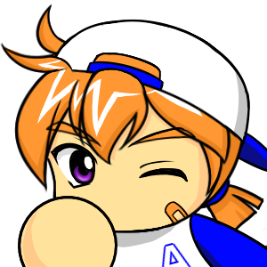

猪狩進
ページ同士をリンクでつなぐことで、Webサイトは一気に広がりを見せるよ！
ここでは
ここでは
<a> タグを使って、別のページや外部サイトへ移動する「遠征ルート（リンク）」の作り方を学ぼう！
1. リンクを作る <a> タグの基本
ページ移動のリンクを作るには <a>（Anchor：アンカー）タグを使います。
基本構文
<a href="移動先のURLまたはファイル名">表示する文字</a>例えば、同じフォルダにある第2章のページ（chapter02.html）へリンクを貼りたい場合は、以下のように書きます。
<a href="chapter02.html">第2章の解説ページを見る</a>2. 外部サイトへ飛ぶときの注意点（target="_blank"）
自分のサイトから別の外部サイト（GoogleやSNSなど）へリンクを貼る時は、ユーザーが自分のサイトに戻ってこられるように「新しいタブ」で開くのがマナーです。
別タブで開くリンク
<a href="https://example.com" target="_blank" rel="noopener">外部サイトを開く</a>| 属性名 | 進くんの解説 |
|---|---|
target="_blank" |
リンク先を「新しいタブ」で開くための指定だよ。元のページを開いたままにできるんだ。 |
rel="noopener" |
別タブで開く時のセキュリティ対策（防犯）だよ！target="_blank" とセットで書くのがWeb制作の約束事なんだ。 |
💡 進くんのワンポイント・アドバイス
自分のサイト内の移動は通常のリンク（相対パス）、外部の全く違うサイトへ飛ばす時は https:// から始まる完全なURL（絶対パス）と target="_blank" を指定する、と使い分けると親切なWebサイトになるよ！
🔍 同じページの中にジャンプするリンクもあるよ！
href="#section1" のように「# ＋ ID名」を指定すると、同じページ内の特定の目次やセクションまで一瞬でスクロールするリンク（ページ内リンク）も作れるんだ！
3. 実践コードサンプル
メニューリンク（ナビゲーション）を作ってみましょう。
index.html
<h1>パワフル野球部・公式サイト</h1>
<!-- サイト内のナビゲーションリンク -->
<nav>
<ul>
<li><a href="index.html">ホーム</a></li>
<li><a href="members.html">部員紹介</a></li>
<li><a href="https://twitter.com" target="_blank" rel="noopener">公式Twitter（外部）</a></li>
</ul>
</nav>
猪狩進
これでHTMLで文章を書き、画像を貼り、ページ同士をつなぐ『Webの骨組み』は完璧マスターだよ！
でも……まだこのページは白黒の「ユニフォームを着ていない状態」なんだ。第5章からは『CSS』を使って色やデザインをかっこよく着飾っていこう！
でも……まだこのページは白黒の「ユニフォームを着ていない状態」なんだ。第5章からは『CSS』を使って色やデザインをかっこよく着飾っていこう！